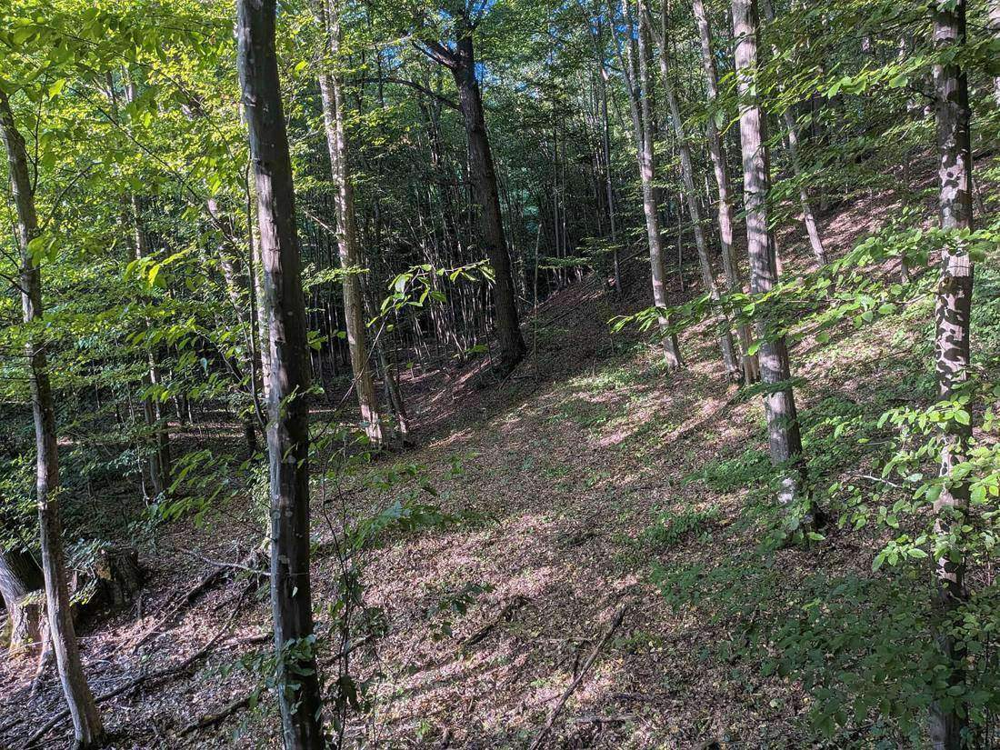
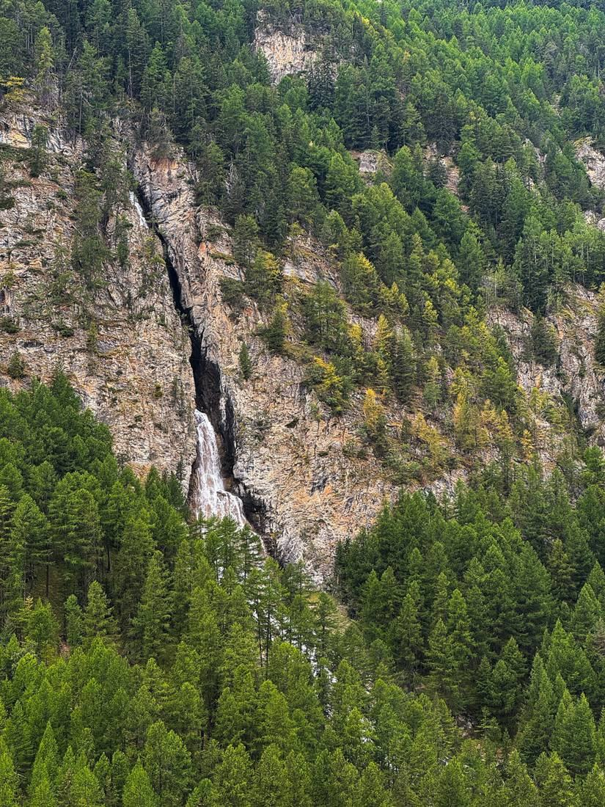

口コミ
想像した声(イメージ例)
ここに載せているのは、制作側が創作した文章です。実在のお客様の投稿ではありません。
- イメージ例
Instagramをのぞいてみたい。営業時間などの情報が載ったら、あらためて確認してみたいです。
- イメージ例
メニューのページに内容がそろうのを楽しみにしています。公開されたらじっくり読んでみたいです。
- イメージ例
お店のページができたと聞いて、Instagramを開いてみたくなりました。写真が増えていくのを待っています。
3件とも制作側の創作で、実在のお客様の投稿ではありません。実際のお客様の声は、掲載の許可を得たものに差し替えます。


ギャラリー(イメージ)
写真のイメージ


写真はイメージです。お店のものではなく、お店で提供している商品を示すものでもありません。